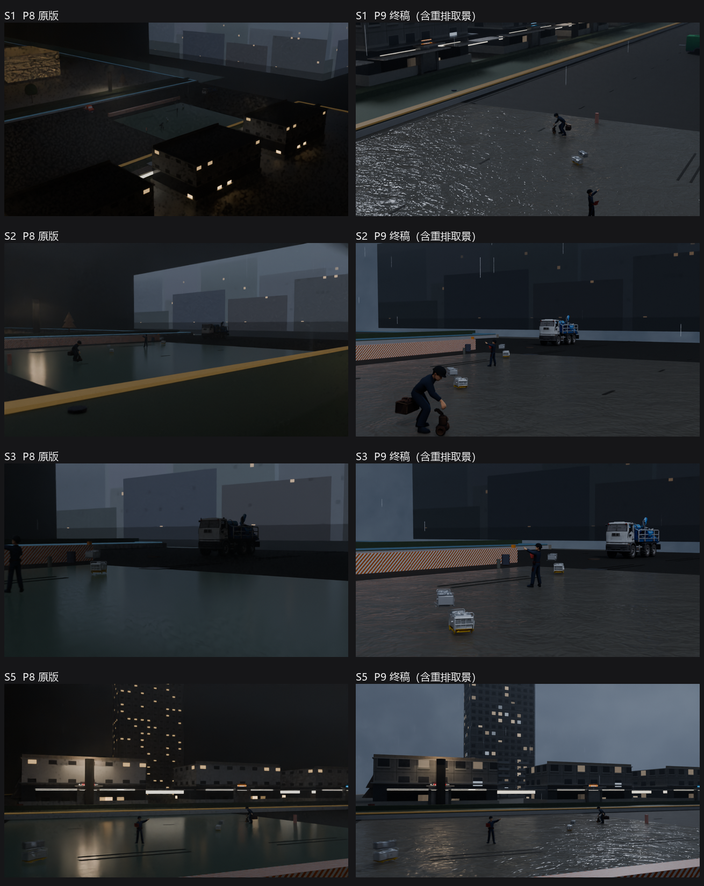

从"决策快照"到"可播放成片"的完整链路上，平台侧实际拿到了什么。所有数字都是本机真跑出来的，没有估计值。
四镜：S1 建立 → S2 封路与处置 → S3 抽排细节 → S5 街面视角。Cycles CPU 离线渲染，片内已标注"非实时引擎"。
VD02-B-incident-P9.mp4 · 60 帧/镜 × 4 镜 · 12spp · 单帧 9.4–10.6 秒 · 四镜合计约 41 分钟
下面这段是终端原样复制，未做修饰。注意第 1 步交付状态是 pending——工具不谎报"已渲染"；第 2 步执行器出片后才翻成 acked。
$ python -m decision_poc.mcp_server … # scene_render 1) scene_render -> snap-c9f48b739b49ca7a delivery = pending $ python -m decision_poc.render_worker --latest --mode asset 2) render_worker -> acked asset 0.02s artifact: clips\snap-c9f48b739b49ca7a.mp4 8,564,103 B sha256=76f27649ee84384f622503c9a53f40b8c36c728bd1f750ec19df3016bce9fa88 # scene_status（平台侧复查） 3) scene_status -> acked | engine: blender-asset next_action: 已出片，可直接取 artifact.path / fetch_url # 同快照再调一次（幂等） 4) render_worker -> reused
左列为原版，右列为本轮重做。四镜逐一对照，含重排取景后的 S1 / S2 / S3。

亮度均值(p95)：S1 0.088→0.194、S2 0.165→0.153、S3 0.172→0.172、S5 0.140→0.271。S2/S3 因背景压成剪影而略降，属取舍不是回退。
| 环节 | 落盘物 |
|---|---|
scene_render | snapshots/<id>.json、jobs/<id>.json |
render_worker | clips/<id>.mp4、acks/<id>.json |
scene_status | 只读，不改任何文件 |
| 交付状态 | 读 acks/ 目录是否存在 |
| 红线 | 实现方式 |
|---|---|
| 不收位姿/材质/镜头 | schema 里没有这些字段；ack 里也不许出现 |
| 不谎报渲染完成 | 没出片就 pending；失败不写 ack |
| 同决策同 id | snapshot_id = 内容哈希 |
| 可重复 | 重跑 reused，不重渲 |
这是"可读的应急决策示意动画"，不是拟真实拍。 三条已知差距：人物是剪影、动作僵硬；水与铺装之间没有水线（需加路缘石几何）；六栋楼底层店招同一套。 另外 UE 通道尚未打通（白模 + 合并网格黑面未解），当前成片由 Blender Cycles 离线渲染。
# 1. 导出平台工具清单（14 工具 / 4 分组） PYTHONPATH=src uv run python -m decision_poc.mcp_server --export-tools samples/nexent/tools.json # 2. 发起渲染作业（平台侧调 MCP 工具，效果等价） PYTHONPATH=src uv run python -m decision_poc.render_worker --latest --mode asset --json # 3. 核对产物 python -c "import hashlib,pathlib;p=pathlib.Path('artifacts/visual/clips/snap-c9f48b739b49ca7a.mp4');print(p.stat().st_size, hashlib.sha256(p.read_bytes()).hexdigest())"